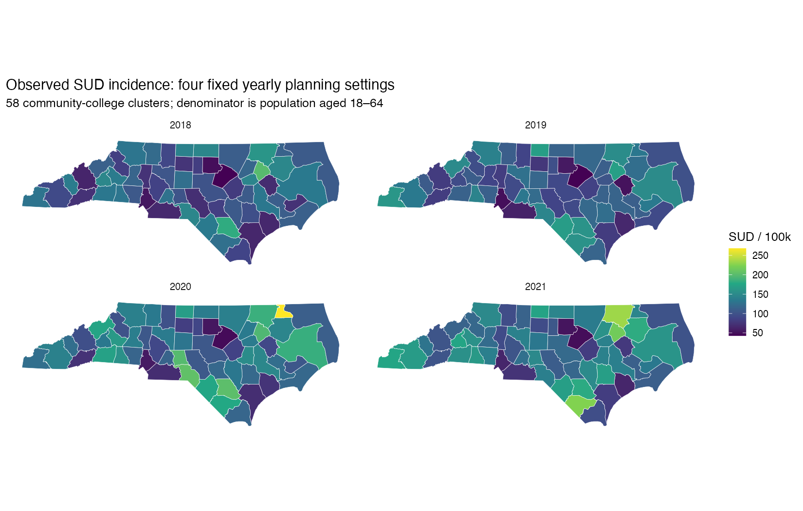
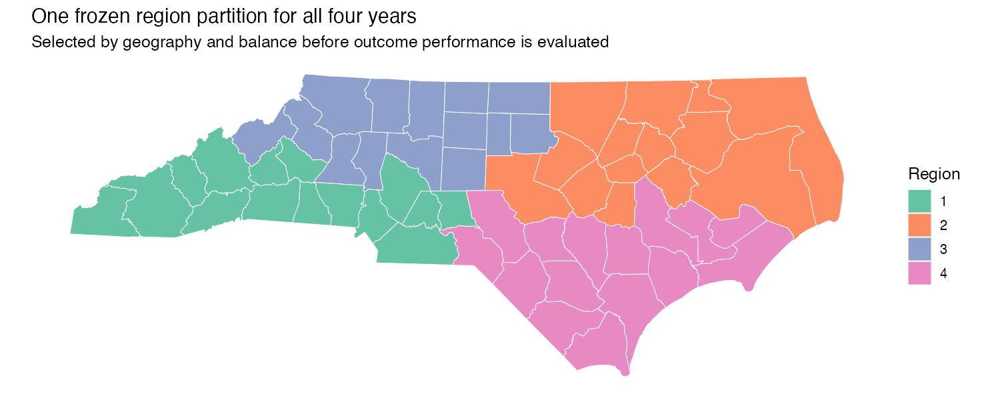
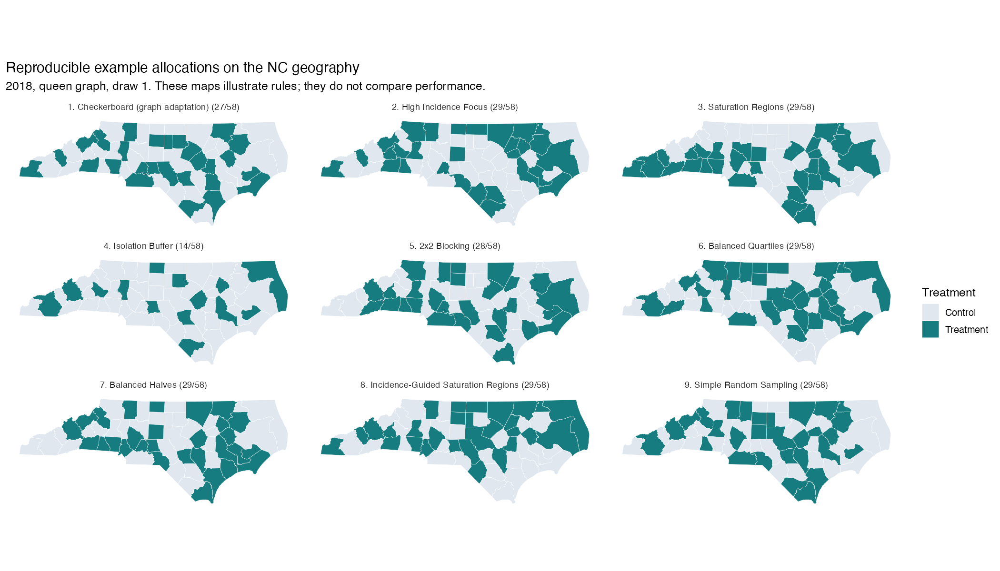
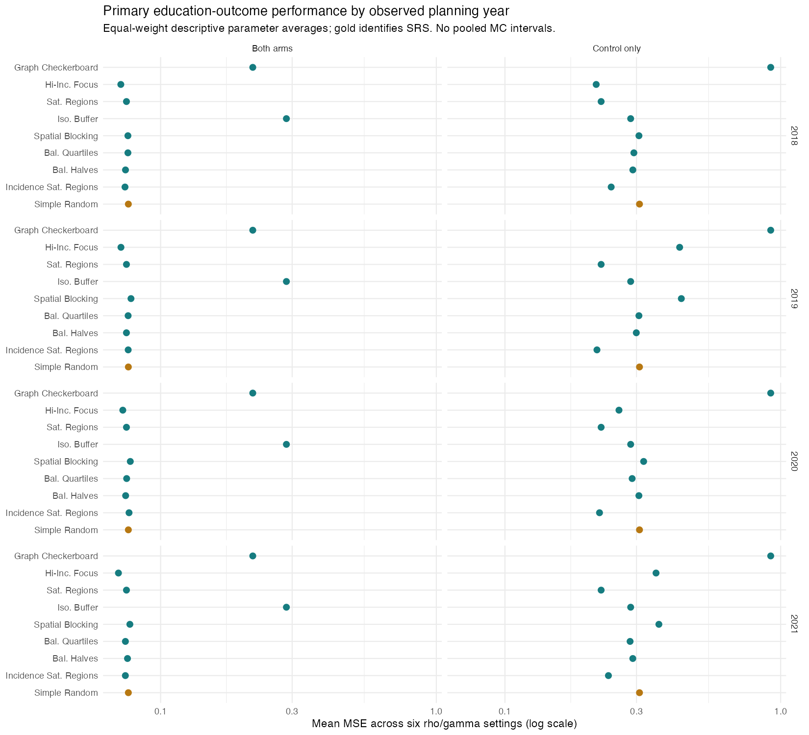
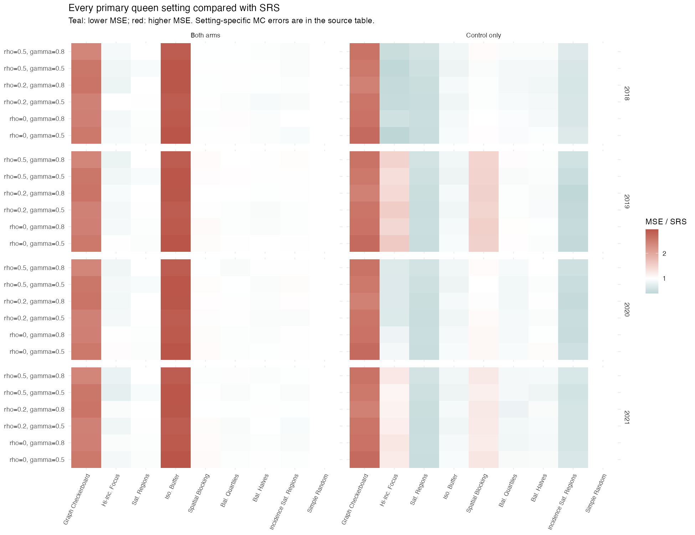
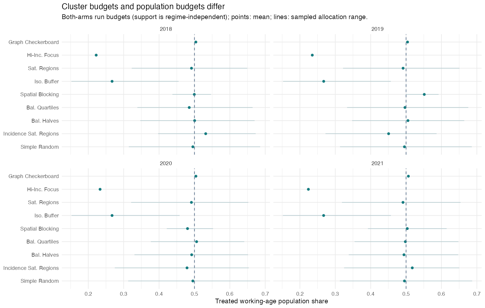
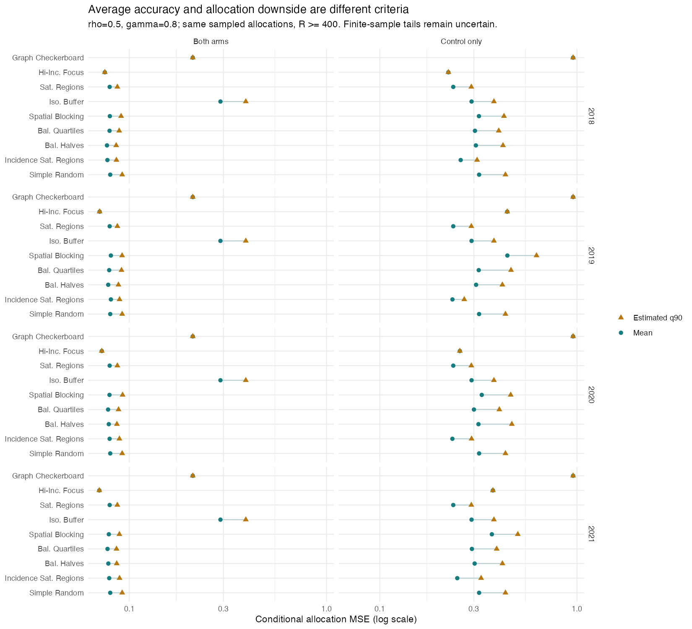

Designing the NC SUD education study
A visual companion to the observed-incidence application, its development and its evidence.
PRODUCTION PRODUCTION: 1248 reporting rows; 936 distinct simulated distributions; 0 incomplete rows; 0 rows outside precision targets.
The question we agreed to study
Which allocation designs estimate a known education intervention effect accurately on this geography, when some designs use observed SUD incidence to direct treatment?
2018–2021 cluster SUD rates
Named geography and neighbors
Draw treatment/control assignments
Keep duplicate draw frequencies
Known τ = 1, spatial dependence
Spillover and independent noise
SAR ML estimate of τ
MSE, bias, coverage and allocation risk
Model and interpretation
Observed SUD incidence guides assignment. It does not enter the outcome baseline. The arbitrary known effect τ is constant across clusters. Fit an intercept, treatment Z and the true spillover covariate using the validated SAR ML estimator.
Add βX with β = 1, X = (average rank − 0.5)/58, to the simulated baseline and adjust for X in the fit. This is a matched baseline-and-adjustment sensitivity. It does not assert that historical SUD incidence predicts education ability.
Control-only: S(Z) = γ(1 − Z)WZ. Both arms: S(Z) = γWZ. Queen weights are primary; rook weights are a focused geographic sensitivity. Noise has SD 1.
This study evaluates estimation of a simulated effect. It does not measure an actual education effect or establish that education reduces SUD.
Observed inputs stay fixed

Every yearly rate is deaths divided by the corresponding working-age population, multiplied by 100,000. No synthetic incidence surface is generated. Each year is a separate planning setting; pooled incidence is descriptive and supports the reference partition.
Adapting the grid designs

Incidence-guided saturation uses per-capita cluster rates → cluster ranks → mean rank within each frozen region → 80/60/40/20% saturation. Mean raw cluster rates and pooled regional deaths/population are separate summary sensitivities. Rules with identical regional ordering and ties reuse the same source explicitly.

Graph Checkerboard is a greedy interspersion adaptation, not a literal rectangular checkerboard. Spatial blocks are frozen once per year. Balanced Halves allocates 14 and 15 treatments across its two 29-cluster halves. Design budgets otherwise retain their rule-specific differences, and population shares are reported separately.
Verification and Monte Carlo precision
Stochastic designs start with 100 allocation draws and 100 outcomes per unique allocation. Proven singleton assignments start with 1,000 independent outcomes. Refinement preserves all prefixes and responds to the dominant uncertainty component. Targets are relative MC SE of mean MSE ≤ 5% and coverage MC SE ≤ 0.01.
Content manifests check inputs, frozen partitions, computation code, package versions, RNG and BLAS before checkpoint reuse. Boundary estimates, non-identification, aliases, warnings and failures are recorded explicitly. Duplicate assignments retain their draw frequencies without being counted as extra independent outcome fits.
Allocation-tail summaries describe estimated conditional MSEs. Upper-tail membership can be uncertain with finite outcomes and draws. Split-half diagnostics and focused outcome refinement qualify tail comparisons. Reused yearly rows are shared evidence, not independent yearly confirmation. Error bars below concern each setting; they are not uncertainty for pooled averages across settings.
What the completed primary analysis shows
Under control-only spillover, plain saturation reduces descriptive mean MSE by 27.4% relative to SRS. Incidence-guided saturation reductions range from 21.1 to 29.9% across the four yearly settings. These averages give equal weight to six rho/gamma pairs. Plain saturation and SRS reuse the same performance sources across years.
Under both-arms spillover, SRS remains competitive with balanced and saturation designs. Small differences do not establish equivalence or a uniquely optimal design. Fixed High Incidence Focus can perform well in some settings but varies across years and is sensitive to the matched baseline/adjustment specification.
Primary yearly mean coverage ranges from 92.6 to 93.7%, below nominal 95%. Meeting Monte Carlo precision targets does not establish nominal interval coverage.



High Incidence Focus treats 29 clusters but about 22–24% of the working-age population. Buffer allocations treat about 16 clusters and 27% of that population. These population shares describe geographic reach, not the proportion of healthcare professionals trained. Each yearly Spatial Blocking partition contains a singleton that remains control under retained rounding; its total budgets are 28/31/27/29.
Queen-versus-rook sensitivity contrasts match the same rho/gamma corners. The matched beta=1 sensitivity changes both the outcome baseline and covariate adjustment, so its differences cannot be attributed to incidence causing poorer education.
Allocation downside after focused outcome refinement

The refined corners support lower estimated upper-tail allocation MSE for saturation designs under control-only spillover. Cross-selected outcome halves retain that descriptive pattern. Under both arms, small tail differences and unstable tail membership do not establish superior protection.
Every non-singleton reporting row flags uncertain membership around the worst-decile boundary. These are the same 100 sampled allocations with more independent outcomes, not new allocation confirmation. For singleton graph and high-incidence assignments, allocation q90 equals conditional mean risk; zero variation and Jaccard=1 do not mean the estimation error or its outcome uncertainty is zero.
Explore current performance
For allocation-downside comparisons select the refined risk corners. Full-study estimates cover the broader grid; the refined set adds outcomes at fixed allocations.
| Design | MSE ± MC SE | Bias | Coverage ± MC SE | Treated | Population share | J / R | Complete / precision |
|---|
Development record and next deliverables
- Study decisions and independent alignment review: complete; concrete implementation approved.
- Input freeze, safeguards and behavioral verification: complete; smoke/pilot remain engineering checks.
- Production and focused tail refinement: completed and separately verified; earlier outputs preserved.
- Thesis chapter and appendix: integrate verified results, trace numbers and exhibits, render and review.
- Standalone CTJ manuscript and supplement: derive from the chapter, verify current journal requirements and Project 1 citation.
- Comprehensive Claude review prompt: prepare after the completed analyses and drafts.
Approved implementation plan · Independent alignment review · Current output directory
Only authorized 58-cluster aggregates are displayed. Restricted county source files are excluded. This document is an offline project artifact; it requires no external scripts or network requests.